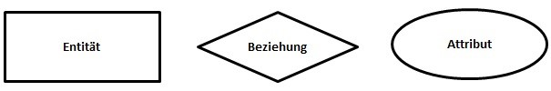

Eine relationale Datenbank kann man sich als eine Sammlung von Tabellen (den Relationen) vorstellen, in welchen Datensätze abgespeichert sind. Jede Zeile (Tupel) in einer Tabelle ist ein Datensatz (record). Jedes Tupel besteht aus einer Reihe von Attributwerten (Attribute = Eigenschaften), den Spalten der Tabelle. Relation heisst Beziehung. Das bedeutet das Relationales Datenbankmodell unter anderem auch auf Beziehungen aufbaut mit anderen Tabellen in einer Datenbank.
Eine Datenbank kann man gut oder schlecht modellieren, man spricht von einer guten Modellierung, wenn eine Datenbank eine: Redundanzfreie Datenspeicherung und hohe Datenkonsistenz hat. Eine redundanzfreie Datenspeicherung liegt dann vor, wenn jede Information in einer Datenbank genau einmal vorkommt. Des Weiteren muss eine hohe Datenkonsistenz verfolgt werden, so dass Daten eindeutige Informationen darstellen. Es gibt ein Paar neue Begriffe welche man zum Datenbank Modellieren kennen sollte:
|
Begriff |
Erklärung |
|
Entität (Tabellenname): |
Eine Entität stellt ein Objekt eines Themenkreises dar, welches Elemente mit gleichen Merkmalen beinhaltet. Beispiele für mögliche Entitäten sind: Firma, Student, Kurs und Professor. |
|
Entitätsmenge (Alle Datensätze einer Entität): |
Eine Entitätsmenge repräsentiert alle Datensätze, die zu einer Entität gehören. |
|
Relation (Tabelle): |
Eine Relation umfasst eine Entität inklusive der dazugehörigen Entitätsmenge. Eine komplette Relation besteht aus einer Entitätsbezeichnung, deren Attributen und Tupeln. |
|
Tupel (Datensatz): |
Ein Tupel repräsentiert alle Merkmalswerte einer Entität einer Entitätsmenge. Alle Tupel einer Entität bilden die Entitätsmenge. |
|
Attribut (Spaltenname): |
Ein Attribut beschreibt genau ein Merkmal eines Tupels in einer Entitätsmenge, zum Beispiel den Namen eines Kunden. |
|
Attributwert (Wert) |
Der Attributwert repräsentiert den Wert, den ein Attribut in einem Tupel annehmen kann, zum Beispiel: Attribut => Name = „Meier“ <= Attributwert |
Wichtiger Hinweis zum Begriff Relation und Tabelle:
Heutzutage werden die Begriffe Relation und Tabelle gleichgesetzt. Das ist leider sehr problematisch, da das Wort „Relation“ im Englischen „Beziehung“ bedeutet. Eine Beziehung hat aber in den Datenbank-Grundlagen eine ganz andere Bedeutung und sagt aus, in welcher Abhängigkeit zwei Tabellen zueinanderstehen.
Die Grundelemente einer Datenbankmodellierung bilden: Entitäten, Beziehungen und Attribute. Diese werden grafisch folgendermaßen dargestellt:
Um was genau es sich bei diesen Elementen handelt, klären die folgenden Punkte:
Das folgende Beispiel eines Datenbank-Modells soll zeigen, wie leicht ein Modell anhand eines realen Beispiels zu erstellen ist:
Erklärung zum Datenbank-Modell: Ein Mitarbeiter hat einen Namen. Ein Projekt hat einen Namen, ein Datum und ein Budget. Ein Mitarbeiter kann mehrere Projekte leiten, aber nur ein Projekt kann von genau einem Mitarbeiter geleitet werden.
Der Primärschlüssel kommt in relationalen Datenbanken zum Einsatz und wird zur eindeutigen Identifizierung eines Datensatzes verwendet. In einer normalisierten Datenbank besitzen alle Tabellen einen Primärschlüssel. Der Wert eines Primärschlüssels muss in einer Tabelle einmalig sein, da er jeden Datensatz eindeutig kennzeichnet. Des Weiteren wird er häufig als Datenbank-Index verwendet, um die Daten auf der Festplatte abzulegen. Es handelt es sich um einen eindeutigen Schlüssel, wenn eine Spalte der Tabelle gespeichert wird. Als Spalte kann ein Attribut des Datensatzes verwendet werden, das für jeden Eintrag in der Tabelle einen einmaligen Wert annimmt. Als eindeutiges Primärschlüsselattribut könnte beispielsweise die Sozialversicherungsnummer in einer Mitarbeitertabelle verwendet werden.
Der Fremdschlüssel kann Bestandteil einer Tabelle in einer relationalen Datenbank sein. Dabei handelt es sich um eine Schlüsselspalte, die auf einen Primärschlüssel einer anderen oder aber derselben Tabelle verweist. Es kann sich dabei um einen einfachen oder zusammengesetzten Schlüssel handeln. Das hängt davon ab, wie der Primärschlüssel der referenzierten Tabelle aufgebaut ist.
was für Fremdschlüsselarten gibt es?
Aufgrund der referentiellen Integrität kann der Fremdschlüssel nur Werte annehmen, die in der Referenztabelle vorhanden sind. Zudem kann eine beliebige Anzahl von Datensätzen den gleichen Fremdschlüsselwert aufweisen.
Beispiel für den Einsatz eines Fremdschlüssels:
In einer normalisierten Tabelle die Kontakte verwaltet, kann beispielsweise zu einer Person ein Unternehmen referenziert werden. In der Tabelle „Ansprechpartner“ wird „Colin Meier“ und ihre Telefonnummer angelegt. Ihr Unternehmen wird aus der Tabelle „Unternehmen“ referenziert, das wäre dann beispielsweise die „ABC GmbH“. Über diese Referenz kann bei einer Abfrage die Anschrift und andere Fakten zum Unternehmen aus der Tabelle „Unternehmen“ abgerufen werden.
Unter Normalisierung eines relationalen Datenbankmodells versteht man die Aufteilung von Attributen in mehrere Relationen (Tabellen) mithilfe der Normalisierungsregeln und deren Normalformen, sodass eine Form entsteht, die keine vermeidbaren Redundanzen mehr enthält.
„Warum wird eine Normalisierung durchgeführt?“
Ziel der Normalisierung ist eine redundanzfreie Datenspeicherung zu erstellen. Redundanzfrei bedeutet, dass Daten entfernt werden können, ohne dass es zu Informationsverlusten kommt. Weiterhin soll die Normalisierung Anomalien entfernen. Im Normalisierungsprozess gibt es fünf Normalformen, welche im Folgenden genauer erklärt werden. In der Datenbankentwicklung ist die Dritte Normalform oft ausreichend, um die perfekte Balance aus Redundanz, Performance und Flexibilität für eine Datenbank zu gewährleisten. Natürlich gibt es auch Sonderfälle, z.B. im wissenschaftlichen Bereich, wo eine Datenbank bis zur 5. Normalform normalisiert werden kann bzw. muss.
Ziele der Datenbank-Normalisierung:
Die Structured Query Language (SQL) zerfällt grob in zwei Teile: